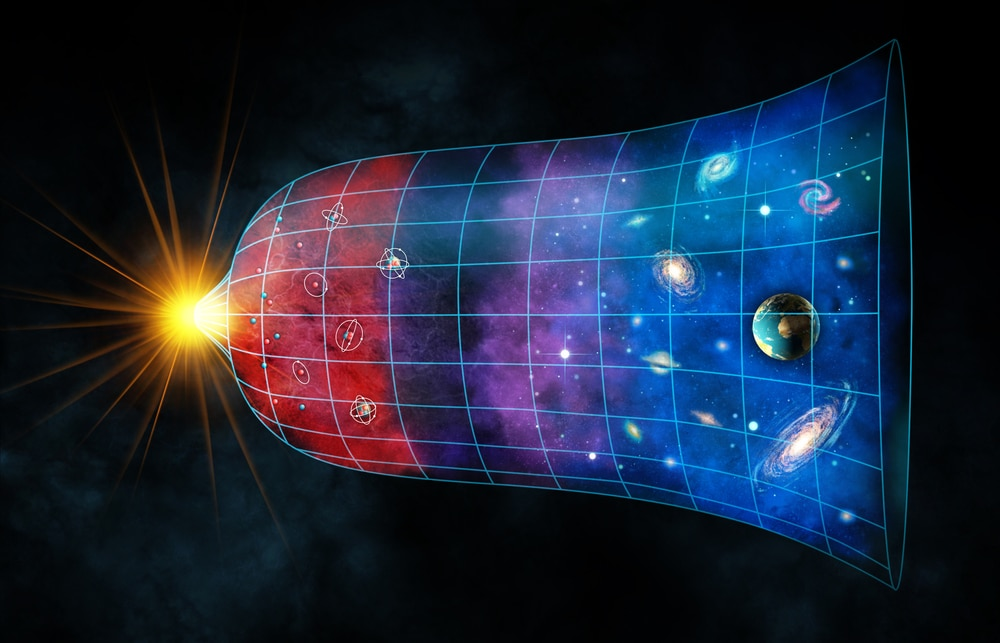

A Formação do Universo
O Big Bang

Segundo a teoria criada pelo astrônomo George Lemaître (1894-1966), o universo tem uma origem comum, a partir da qual tudo se originou. Esta teoria foi confirmada pelo astrônomo norte-americano Edwin Hubble, que verificou que as galáxias estão em constante expansão e afastamento. A teoria do Big Bang diz que toda matéria e energia se concentravam em um ponto super denso e quente, conhecido como singularidade. A partir deste ponto, o universo se expandiu num processo conhecido como inflação, que durou uma fração infinitesimal de tempo. Uma série de transformações continuou a acontecer por bilhões de anos, até a estrutura com que o conhecemos hoje. O universo foi se expandindo cada vez mais, de forma que foi se resfriando, dando origem aos diversos astros.
A Idade do Universo
A idade do universo é um dos assuntos mais debatidos pela cosmologia e astronomia. Estudos mais recentes apontam que a idade aproximada está entre 13,8 a 14 bilhões de anos.
Para chegar a tal conclusão, diversos estudos foram realizados e comparados. Dados foram coletados a partir de satélites, como o satélite Planck, e observatórios terrestres como o Atacama Cosmology Telescope (ACT).
Estes estudos consideram a velocidade de expansão do universo. É importante lembrar que a ciência está em constante avanço e tais conclusões estão baseadas no que é possível observar hoje.
Tamanho do Universo

O tamanho do Universo é um pouco difícil de definir. De acordo com uma definição restritiva, o Universo é tudo dentro do nosso espaço-tempo conectado que poderia ter uma chance de interagir conosco e vice-versa.[39] Segundo a teoria geral da relatividade, algumas regiões do espaço podem nunca interagir conosco durante a existência do Universo devido à velocidade finita da luz e à expansão contínua do espaço. Por exemplo, as mensagens de rádio enviadas da Terra talvez nunca cheguem a algumas regiões do espaço, mesmo que o Universo exista para sempre: o espaço pode se expandir mais rápido do que a luz pode atravessá-lo.
Supõe-se que regiões distantes do espaço existem e fazem parte da realidade tanto quanto nós, mesmo que nunca possamos interagir com elas. A região espacial que podemos afetar e ser afetada é o Universo observável. O Universo observável depende da localização do observador. Viajando, um observador pode entrar em contato com uma região maior do espaço-tempo do que um observador que permanece imóvel. No entanto, mesmo o viajante mais rápido não será capaz de interagir com todo o espaço. Tipicamente, o Universo observável significa a porção do Universo que é observável de nosso ponto de observação na Via Láctea.